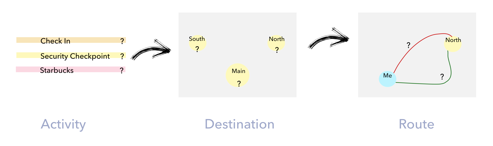

The interaction of keyboards and touchscreens requires efforts and attention. Considering the convenient and accessible wearable input, we introduce Finger Proximity, a novel thumb-mounted sensing solution to enable eyes-free interactions using one handed input technologies.
MY ROLE
Design
Refined the physical ring prototype with four proximity sensors. Designed the interaction scenario it could be used.
Algorithm
Developing a novel method using machine learning algorithm for touch detection.
User Study
Conducted user study to evaluate the accuracy of the whole system.
DURATION
Nov 2017 - Present @ Georgia Tech
METHODS AND TOOLS
Hardware Design, 3D Printing, Proximity Sensor, Fusion 360, Arduino, Java
Finger Proximity has two main parts of the hardware: A ring and 4 proximity sensors. The distance figures received from sensors will be relayed to the computer for data processing.

RING DESIGN
- Understand users' needs in depth under real life context.
- The utility and usability of the application to support navigation by travelers with different physical abilities.

CONTEXTUAL INQUIRY
The user tasks we designed is displayed below. The whole process was audio and video recorded. And we used think aloud method to gather more information about users' behavior.

AFFINITY MAPPING
Based on the 8 participants' recording, Elaine and I independently transcribed and summarized the insights. And then our codes were discussed, modified, and combined. After using affinity mapping, insights were categorized to 3 major parts - usability and utility of the navigational delivery functions, usability of generic information design and information related to users's needs for facilitating decision making.

Ideation
According to the research results, we found that users not only need directional navigation which is provided in most navigation applications. More importantly, they also need behavior navigation. That means, we should provide seamless navigation experience of what users can do for the next step and more information to facilitate their behavior decision making.
The COMPLEXITY of behavior navigation is that under the context of the airport, users need to make several levels of decisions (unlike most navigation application, users only need to decide origin and destination).
First, users need to decide what activities they want to do. Under the context of airport, activities include mandatory activities(check-in, security check, gate) and exploratory activities(shop, dine, restroom, etc.).
Then, multiple places/ destinations can be chosen within one activity. For instance, if users choose security check, they can choose 3 options among south, north, or main security check according to their needs.
The last hierarchy is that users can choose different routes from one decision point to another.
The hierarchy of decision making is as below:

Journey Map
According to the users needs from research result, we drew journey map based on the hierarchy of decision making and marked information that users need for each decision making steps.

Design Iteration
Mandatory Activity
——
Customize activity, destination, route choices
Users can select their preferred activities, routes based on the time Info and accessibility info. We automatically recommends two routes - wheelchair friendly or not. Instead of just providing total time info, we provide walking time(which can be customized in the menu) and estimate waiting time to increase their confidence.
Exploratory Activity
——
Add amenities on their way to gate
Users can add restaurants, shops or restrooms on their way to gate. Considering the final goal is more important to users(e.g. get to check in counter), the app provides total time info as references.
Destination Behavior Nav
——
Provide more info after you arrive at destination
The app will give you notification after you've arrived at the destination. And if you need more information about the destination, such as specific direction, things to prepare, the app will give you step by step behavior navigation.
Three Mode
——
Get to gate, explore amenities, flight info
Mandatory and exploratory activities can be chosen in two modes so that users can focus on mandatory activities when time is emergent. If they have time to look around, they can use explore mode to find restaurants, shops and restrooms. Besides, users can get flight info in real time using the third mode.
Refinement
User Flow

Prototype